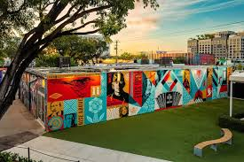
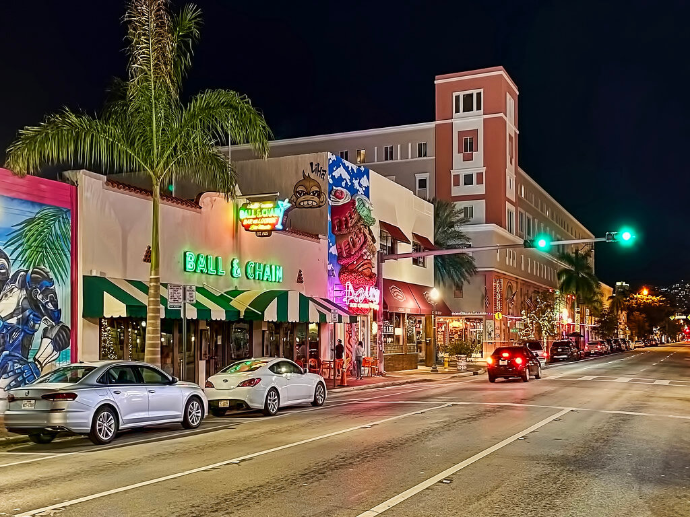
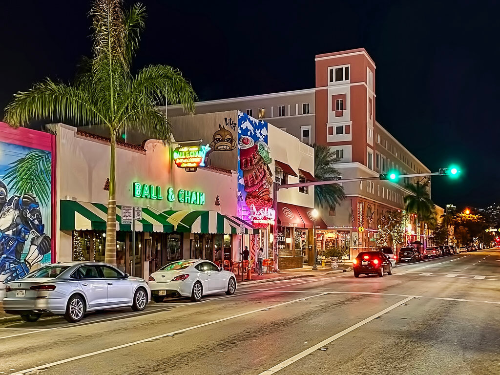
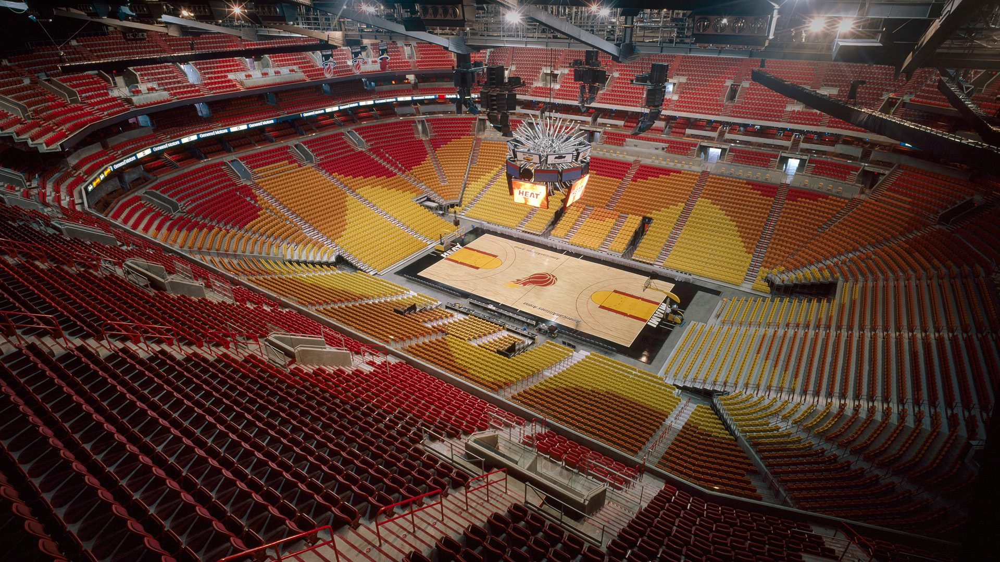
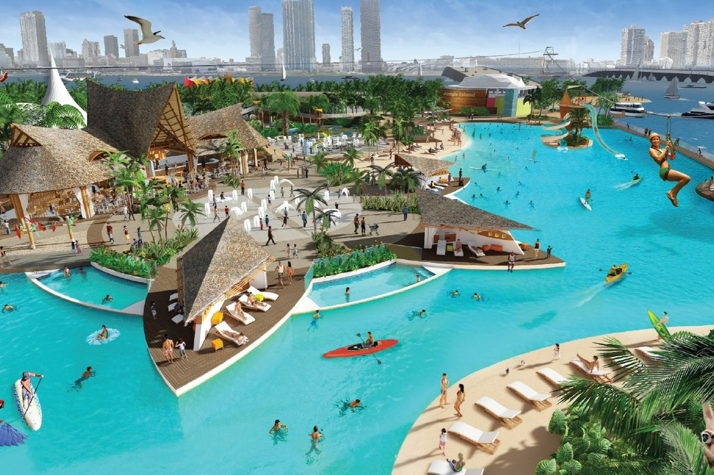
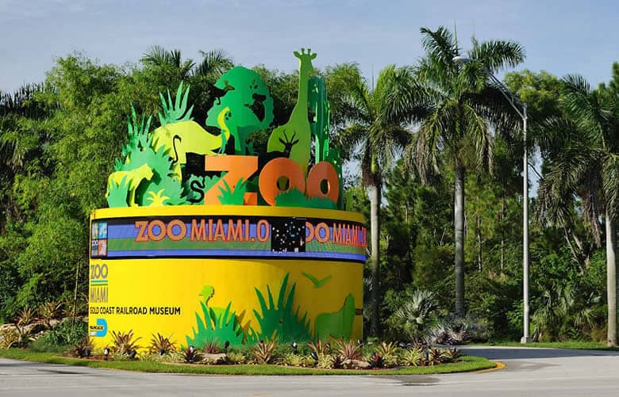

Informações sobre a cidade
História, Informações básicas e nascimento.
Informações básicas
- Localização: Sudeste da Flórida, Estados Unidos.
- Estado: Flórida.
- Condado: Miami-Dade.
- População: Cerca de 450 mil habitantes (na cidade em si), mas a região metropolitana ultrapassa 6 milhões.
- Idioma principal: Inglês, mas o espanhol é muito falado devido à grande comunidade latina.
- Clima: Tropical, com verões quentes e úmidos e invernos amenos e secos.
Nascimento de Miami
- Data oficial de fundação: 28 de julho de 1896.
- Como surgiu: A cidade foi oficialmente incorporada após a chegada da Florida East Coast Railway, ferrovia de Henry Flagler. Essa ferrovia foi essencial para o crescimento da região.
- Nome: O nome "Miami" vem do rio Miami River, que por sua vez, deriva do nome de uma tribo indígena chamada Mayaimi, que vivia ao redor do Lago Okeechobee.
Praias
South Beach (Miami Beach)
- A mais famosa de todas! Areia branca, mar azul-turquesa, muitos bares e gente bonita.
- O bairro Art Déco ali é super famoso pelas fachadas coloridas.

Miami Beach
- Uma ilha conectada ao continente, cheia de resorts, lojas e vida noturna.
- Além de South Beach, tem outras praias mais tranquilas, como North Beach.

- A mais famosa de todas! Areia branca, mar azul-turquesa, muitos bares e gente bonita.
- O bairro Art Déco ali é super famoso pelas fachadas coloridas.
Miami Beach
- Uma ilha conectada ao continente, cheia de resorts, lojas e vida noturna.
- Além de South Beach, tem outras praias mais tranquilas, como North Beach.
Arte, Cultura e Museus
Wynwood Walls
- Um dos maiores e mais legais museus de arte de rua do mundo. Cheio de murais incríveis pintados por artistas internacionais.

Pérez Art Museum Miami (PAMM)
- Museu moderno com foco em arte contemporânea e vista linda pra Baía de Biscayne.

Little Havana
- Bairro cubano super tradicional. A Calle Ocho (8th Street) é o coração do bairro, com música, charutos, comida e cultura cubana.

- Um dos maiores e mais legais museus de arte de rua do mundo. Cheio de murais incríveis pintados por artistas internacionais.
Pérez Art Museum Miami (PAMM)
- Museu moderno com foco em arte contemporânea e vista linda pra Baía de Biscayne.
Little Havana
- Bairro cubano super tradicional. A Calle Ocho (8th Street) é o coração do bairro, com música, charutos, comida e cultura cubana.

- Bairro cubano super tradicional. A Calle Ocho (8th Street) é o coração do bairro, com música, charutos, comida e cultura cubana.
Natureza e Parques
Everglades National Park
- A uma hora de Miami. Ideal pra quem quer ver jacarés, pântanos e fazer passeios de airboat.

Fairchild Tropical Botanic Garden
- Jardim botânico gigante com plantas tropicais raras. Perfeito pra um passeio mais tranquilo.

Vizcaya Museum and Gardens
- Mansão histórica em estilo europeu com jardins incríveis, à beira-mar.

- A uma hora de Miami. Ideal pra quem quer ver jacarés, pântanos e fazer passeios de airboat.
Fairchild Tropical Botanic Garden
- Jardim botânico gigante com plantas tropicais raras. Perfeito pra um passeio mais tranquilo.
Vizcaya Museum and Gardens
- Mansão histórica em estilo europeu com jardins incríveis, à beira-mar.
- Mansão histórica em estilo europeu com jardins incríveis, à beira-mar.
Outras atrações populares
- Ocean Drive – rua icônica cheia de bares e prédios Art Déco, ótimo pra passear à noite.
- American Airlines Arena / Kaseya Center – casa do time Miami Heat (NBA) e palco de shows. 
- Jungle Island – parque com animais exóticos, ideal pra famílias com crianças. 
- Zoo Miami – um dos maiores zoológicos dos EUA, com áreas bem amplas e diversas espécies. 

História
Antes dos europeus:
- A região era habitada pelos povos indígenas Tequesta, há mais de mil anos.
- Esses povos viviam da pesca, caça e coleta, e construíam aldeias ao longo do rio Miami.
Colonização europeia:
- Os espanhóis chegaram à Flórida no século XVI, mas a área de Miami permaneceu relativamente inexplorada por séculos.
- Durante o domínio espanhol e mais tarde britânico, a região continuou sendo majoritariamente indígena.
Século XIX:
- No início de 1800, os EUA tomaram controle da Flórida.
- A região começou a receber alguns colonos americanos, mas ainda era muito rural.
- A Guerra Seminole (conflitos com indígenas) dificultou o crescimento por um tempo.
Expansão com a ferrovia (final do século XIX):
- A chegada da ferrovia de Henry Flagler foi um divisor de águas.
- Ele investiu na construção de hotéis e infraestrutura, atraindo moradores e turistas.
- Em 1896, Miami foi incorporada oficialmente como cidade.
Século XX:
- Décadas de 1920 e 30: crescimento com a bolha imobiliária e turismo.
- Anos 50-60: migração cubana após a Revolução de Fidel Castro. Miami se transformou em um importante centro da cultura cubana e latina.
- Anos 80-90: Miami cresceu como centro financeiro, turístico e cultural.
Hoje:
- É uma cidade global, conhecida por suas praias, vida noturna, diversidade cultural, arte (como a Art Basel Miami), além de ser um centro importante de negócios e comércio com a América Latina.
- Os espanhóis chegaram à Flórida no século XVI, mas a área de Miami permaneceu relativamente inexplorada por séculos.
- Durante o domínio espanhol e mais tarde britânico, a região continuou sendo majoritariamente indígena.
Século XIX:
- No início de 1800, os EUA tomaram controle da Flórida.
- A região começou a receber alguns colonos americanos, mas ainda era muito rural.
- A Guerra Seminole (conflitos com indígenas) dificultou o crescimento por um tempo.
Expansão com a ferrovia (final do século XIX):
- A chegada da ferrovia de Henry Flagler foi um divisor de águas.
- Ele investiu na construção de hotéis e infraestrutura, atraindo moradores e turistas.
- Em 1896, Miami foi incorporada oficialmente como cidade.
Século XX:
- Décadas de 1920 e 30: crescimento com a bolha imobiliária e turismo.
- Anos 50-60: migração cubana após a Revolução de Fidel Castro. Miami se transformou em um importante centro da cultura cubana e latina.
- Anos 80-90: Miami cresceu como centro financeiro, turístico e cultural.
Hoje:
- É uma cidade global, conhecida por suas praias, vida noturna, diversidade cultural, arte (como a Art Basel Miami), além de ser um centro importante de negócios e comércio com a América Latina.
- A chegada da ferrovia de Henry Flagler foi um divisor de águas.
- Ele investiu na construção de hotéis e infraestrutura, atraindo moradores e turistas.
- Em 1896, Miami foi incorporada oficialmente como cidade.
Século XX:
- Décadas de 1920 e 30: crescimento com a bolha imobiliária e turismo.
- Anos 50-60: migração cubana após a Revolução de Fidel Castro. Miami se transformou em um importante centro da cultura cubana e latina.
- Anos 80-90: Miami cresceu como centro financeiro, turístico e cultural.
Hoje:
- É uma cidade global, conhecida por suas praias, vida noturna, diversidade cultural, arte (como a Art Basel Miami), além de ser um centro importante de negócios e comércio com a América Latina.
- É uma cidade global, conhecida por suas praias, vida noturna, diversidade cultural, arte (como a Art Basel Miami), além de ser um centro importante de negócios e comércio com a América Latina.